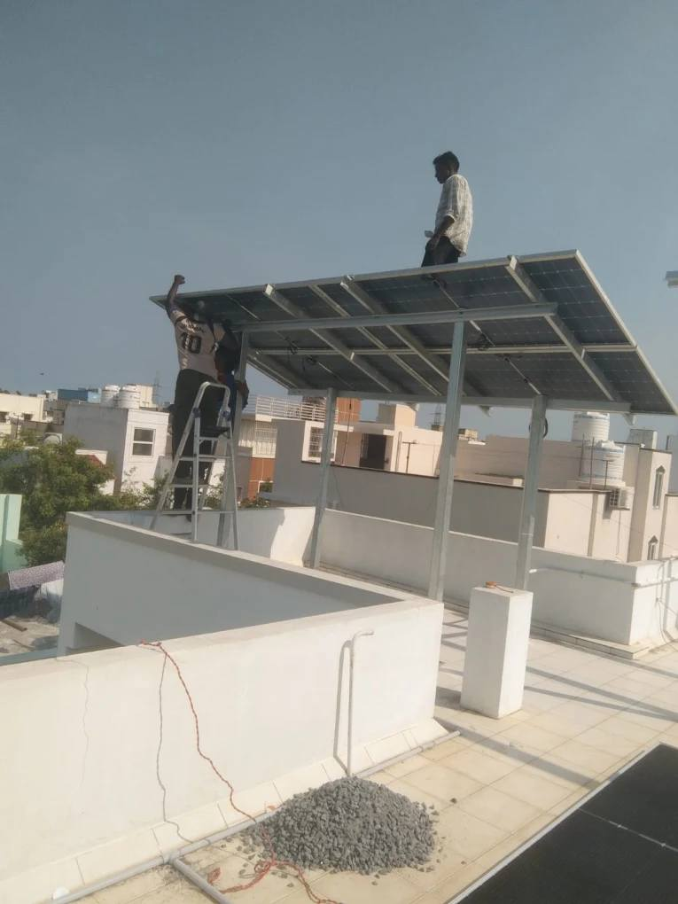

Solar installation in Madipakkam: what local homes should check first.
If you are searching for solar installation in Madipakkam, you are usually looking for a team that can visit the terrace the same week, not a call centre quoting a 5 kW plant from a photograph. ZeroEB works from MSP Complex on Medavakkam Main Road, opposite Kumaran Theatre. That matters after the panels go up: net-meter follow-up, a loose MC4, or a cleaning visit should not wait on a crew travelling across the city.

What Madipakkam roofs typically look like
South Chennai independent houses share a few patterns that change both capacity and mounting. A good survey on a Madipakkam terrace looks at these before anyone talks price:
- Overhead tanks and staircase heads. They steal usable area and throw afternoon shade. Capacity should be based on the clear rectangle, not the full terrace measurement.
- Parapet walls and neighbouring buildings. Rows along Velachery–Tambaram corridor streets can shade the east or west edge for part of the day.
- Walkways and washing lines. Families still use the terrace. An elevated structure often keeps the floor usable; a flush mount does not.
- Slab condition and waterproofing. Anchor points must be sealed. A cheap structure that leaks in the first monsoon is more expensive than a careful one.
That is why solar installation in Madipakkam should start on the roof, with your last year of TANGEDCO bills in hand, not with a round number over WhatsApp.
TANGEDCO, net metering, and subsidy from here
A grid-tied plant on a Madipakkam home still needs a working EB connection. Surplus units go out through a net meter; you draw from the grid at night and on heavy monsoon days. The paperwork is not optional if you want the bill to drop the way the quote promised.
Eligible homeowners can receive a government subsidy of up to ₹78,000. Amount and approval follow current scheme rules. We include application support with a complete rooftop plant — the same scope as our solar installation in Chennai service, delivered by the Madipakkam team.
Bring to the site visit: six to twelve months of EB bills, sanctioned load, and confirmation that you control the roof. Apartment common terraces need association approval before anyone drills.
What a complete local installation includes
Labour-only work is a different product. For a full solar installation in Madipakkam we treat one job as:
- Site survey and system design matched to your units, not an appliance count
- Civil work and mounting structure, sealed at the roof
- Panels, inverter placement, AC/DC wiring, and earthing
- Testing, commissioning, and help with net-meter and subsidy files
If you already bought equipment online and only need the crew, that is our installation services page. Do not mix the two quotes; they are not the same project.
After switch-on: why “nearby” still matters
Chennai dust and bird droppings cut generation faster than most brochures admit. A plant in Madipakkam, Nanganallur, Keelkattalai, or Medavakkam is easy for us to clean and inspect. That is also why Google reviews from this neighbourhood mention follow-up, not only the day the array went live.
You can see finished homes in our work gallery, or book a free site inspection. Call +91 9042517415 or WhatsApp if you would rather start with a short conversation about your bill.
For the city-wide process — monsoon, heat, and how quotes differ across Chennai — read solar installation in Chennai: what to expect before you sign.
Next step
Book a Madipakkam rooftop inspection.
We are on Medavakkam Main Road. A visit takes under an hour and comes with a written recommendation, not a hard sell.